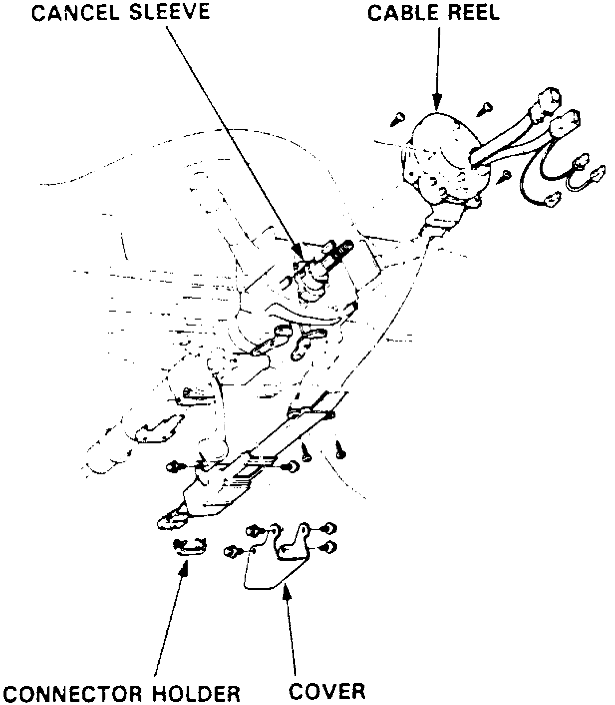

Removal
Prior to performing service procedure, disarm SRS as outlined under Supplemental Restraint System (SRS) Disarming and Arming. Failure to disarm SRS could result in system deployment and personal injury. SRS electrical wiring can be identified by a yellow outer protective coating.1. Place steering wheel in straight ahead position, then place ignition switch in lock position.
2. Disconnect battery negative cable, then disconnect battery positive cable.
3. Remove instrument panel lower cover, then disconnect windshield wiper control unit.
4. Remove instrument panel lower cover and knee bolster.
5. Using a T30 bit, remove two Torx bolts attaching air bag assembly to steering wheel. Carefully lift air bag assembly from steering wheel. Store air bag assembly in a secure area with pad surface facing upward.
6. Remove steering wheel to steering shaft retaining nut, then disconnect horn, cruise control set/resume switch and cable reel electrical connectors.
7. Remove steering wheel from column steering shaft.
8. Remove steering column upper and lower covers.
9. Disconnect cable reel to SRS main wiring harness electrical connector, then remove cable reel electrical connector bracket clip from steering column.
Fig. 16 Cable Reel & Canceling Sleeve Removal:

10. Remove cable reel and canceling sleeve, Fig. 16.